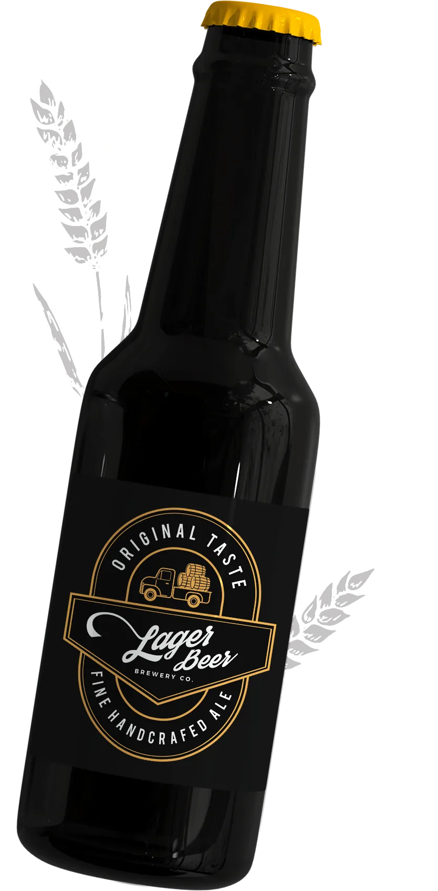

Lager Beer
This classic bottled beer features a wheat aroma and mild taste.
ABV - 4.2%
IBU - 12
Light, mild, with very little bitterness.
BOTTLED BEER SPECIALS
Appreciate the taste of craft bottled beer from the best producers.
This classic bottled beer features a wheat aroma and mild taste.
ABV - 4.2%
IBU - 12
Light, mild, with very little bitterness.
"England's favorite beer" is a great choice for those who like dark varieties of beer.
ABV - 4.6%
IBU - 40
Bitter, malty, with a slight aftertaste of toasts.
Ideal for those who prefer strong and bitter beer with rich aroma.
ABV - 8%
IBU - 80
Very bitter, hoppy, with grainy notes.